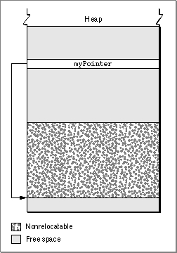
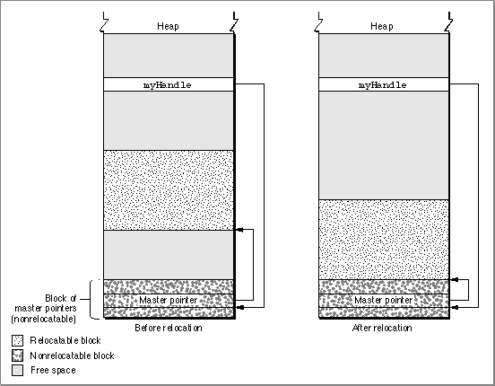
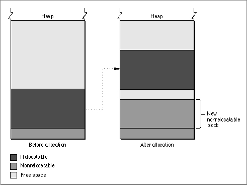
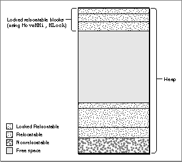

Legacy Document
Important: The information in this document is obsolete and should not be used for new development.
Important: The information in this document is obsolete and should not be used for new development.


Heap Management
Applications allocate and manipulate memory primarily in their application heap. As you have seen, space in the application heap is allocated and released on demand. When the blocks in your heap are free to move, the Memory Manager can often reorganize the heap to free space when necessary to fulfill a memory-allocation request. In some cases, however, blocks in your heap cannot move. In these cases, you need to pay close attention to memory allocation and management to avoid fragmenting your heap and running out of memory.This section provides a general description of how to manage blocks of memory in your application heap. It describes
For examples of specific techniques you can use to implement the strategies discussed in this section, see "Using Memory" beginning on page 1-38.
- relocatable and nonrelocatable blocks
- properties of relocatable blocks
- heap purging and compaction
- heap fragmentation
- dangling pointers
- low-memory conditions
Relocatable and Nonrelocatable Blocks
You can use the Memory Manager to allocate two different types of blocks in your heap: nonrelocatable blocks and relocatable blocks. A nonrelocatable block is a block of memory whose location in the heap is fixed. In contrast, a relocatable block is a block
of memory that can be moved within the heap (perhaps during heap compaction).
The Memory Manager sometimes moves relocatable blocks during memory operations so that it can use the space in the heap optimally.The Memory Manager provides data types that reference both relocatable and nonrelocatable blocks. It also provides routines that allow you to allocate and release blocks of both types.
To reference a nonrelocatable block, you can use a pointer variable, defined by the
Ptrdata type.
TYPE SignedByte = -128..127; Ptr = ^SignedByte;A pointer is simply the address of an arbitrary byte in memory, and a pointer to a nonrelocatable block of memory is simply the address of the first byte in the block, as illustrated in Figure 1-8. After you allocate a nonrelocatable block, you can make copies of the pointer variable. Because a pointer is the address of a block of memory that cannot be moved, all copies of the pointer correctly reference the block as long as you don't dispose of it.Figure 1-8 A pointer to a nonrelocatable block

The pointer variable itself occupies 4 bytes of space in your application partition.
Often the pointer variable is a global variable and is therefore contained in
your application's A5 world. But the pointer can also be allocated on the stack
or in the heap itself.To reference relocatable blocks, the Memory Manager uses a scheme known as
double indirection. The Memory Manager keeps track of a relocatable block internally with a master pointer, which itself is part of a nonrelocatable master pointer block
in your application heap and can never move.
When the Memory Manager moves a relocatable block, it updates the master pointer
- Note
- The Memory Manager allocates one master pointer block (containing
64 master pointers) for your application at launch time, and you can
call theMoreMastersprocedure to request that additional master pointer blocks be allocated. See "Setting Up the Application Heap" beginning on page 1-38 for instructions on allocating master pointer blocks.
so that it always contains the address of the relocatable block. You reference the block with a handle, defined by theHandledata type.
TYPE Handle = ^Ptr;A handle contains the address of a master pointer. The left side of Figure 1-9 shows
a handle to a relocatable block of memory located in the middle of the application
heap. If necessary (perhaps to make room for another block of memory), the
Memory Manager can move that block down in the heap, as shown in the right
side of Figure 1-9.Figure 1-9 A handle to a relocatable block
 Master pointers for relocatable objects in your heap are always allocated in your application heap. Because the blocks of masters pointers are nonrelocatable, it is best to allocate them as low in your heap as possible. You can do this by calling the
MoreMastersprocedure when your application starts up.Whenever possible, you should allocate memory in relocatable blocks. This gives the Memory Manager the greatest freedom when rearranging the blocks in your application heap to create a new block of free memory. In some cases, however, you may be forced to allocate a nonrelocatable block of memory. When you call the Window Manager function
NewWindow, for example, the Window Manager internally calls theNewPtrfunction to allocate a new nonrelocatable block in your application partition. You need to exercise care when calling Toolbox routines that allocate such blocks, lest your application heap become overly fragmented. See "Allocating Blocks of Memory" on page 1-44 for specific guidelines on allocating nonrelocatable blocks.Using relocatable blocks makes the Memory Manager more efficient at managing available space, but it does carry some overhead. As you have seen, the Memory Manager must allocate extra memory to hold master pointers for relocatable blocks. It groups these master pointers into nonrelocatable blocks. For large relocatable blocks, this extra space is negligible, but if you allocate many very small relocatable blocks, the cost can be considerable. For this reason, you should avoid allocating a very large number of handles to small blocks; instead, allocate a single large block and use it as an array to hold the data you need.
Properties of Relocatable Blocks
As you have seen, a heap block can be either relocatable or nonrelocatable. The designation of a block as relocatable or nonrelocatable is a permanent property of that block. If relocatable, a block can be either locked or unlocked; if it's unlocked, a block can be either purgeable or unpurgeable. These attributes of relocatable blocks can be set and changed as necessary. The following sections explain how to lock and unlock blocks, and how to mark them as purgeable or unpurgeable.Locking and Unlocking Relocatable Blocks
Occasionally, you might need a relocatable block of memory to stay in one place. To prevent a block from moving, you can lock it, using theHLockprocedure. Once you have locked a block, it won't move. Later, you can unlock it, using theHUnlockprocedure, allowing it to move again.In general, you need to lock a relocatable block only if there is some danger that it might be moved during the time that you read or write the data in that block. This might happen, for instance, if you dereference a handle to obtain a pointer to the data and
(for increased speed) use the pointer within a loop that calls routines that might
cause memory to be moved. If, within the loop, the block whose data you are accessing is in fact moved, then the pointer no longer points to that data; this pointer is said
to dangle.
Using locked relocatable blocks can, however, slow the Memory Manager down as much as using nonrelocatable blocks. The Memory Manager can't move locked blocks. In addition, except when you allocate memory and resize relocatable blocks, it can't move relocatable blocks around locked relocatable blocks (just as it can't move them around nonrelocatable blocks). Thus, locking a block in the middle of the heap for long periods of time can increase heap fragmentation.
- Note
- Locking a block is only one way to prevent a dangling pointer. See "Dangling Pointers" on page 1-29 for a complete discussion of how to avoid dangling pointers.
Locking and unlocking blocks every time you want to prevent a block from moving can become troublesome. Fortunately, the Memory Manager moves unlocked, relocatable blocks only at well-defined, predictable times. In general, each routine description in Inside Macintosh indicates whether the routine could move or purge memory. If you do not call any of those routines in a section of code, you can rely on all blocks to remain stationary while that code executes. Note that the Segment Manager might move memory if you call a routine located in a segment that is not currently resident
in memory. See "Loading Code Segments" on page 1-31 for details.Purging and Reallocating Relocatable Blocks
One advantage of relocatable blocks is that you can use them to store information that you would like to keep in memory to make your application more efficient, but that you don't really need if available memory space becomes low. For example, your application might, at the beginning of its execution, load user preferences from a preferences file into a relocatable block. As long as the block remains in memory, your application can access information from the preferences file without actually reopening the file. However, reopening the file probably wouldn't take enough time to justify keeping the block in memory if memory space were scarce.By making a relocatable block purgeable, you allow the Memory Manager to free
the space it occupies if necessary. If you later want to prohibit the Memory Manager from freeing the space occupied by a relocatable block, you can make the block unpurgeable. You can use theHPurgeandHNoPurgeprocedures to change back
and forth between these two states. A block you create by callingNewHandleis
initially unpurgeable.Once you make a relocatable block purgeable, you should subsequently check
handles to that block before using them if you call any of the routines that could
move or purge memory. If a handle's master pointer is set toNIL, then the
Operating System has purged its block. To use the information formerly in the block,
you must reallocate space for it (perhaps by calling theReallocateHandleprocedure) and then reconstruct its contents (for example, by rereading the preferences file).
Figure 1-10 illustrates the purging and reallocating of a relocatable block. When the block is purged, its master pointer is set toNIL. When it is reallocated, the handle correctly references a new block, but that block's contents are initially undefined.Figure 1-10 Purging and reallocating a relocatable block
Memory Reservation
The Memory Manager does its best to prevent situations in which nonrelocatable blocks in the middle of the heap trap relocatable blocks. When it allocates new nonrelocatable blocks, it attempts to reserve memory for them as low in the heap as possible. The Memory Manager reserves memory for a nonrelocatable block by moving unlocked relocatable blocks upward until it has created a space large enough for the new block. When the Memory Manager can successfully pack all nonrelocatable blocks into the bottom of the heap, no nonrelocatable block can trap a relocatable block, and it has successfully prevented heap fragmentation.Figure 1-11 illustrates how the Memory Manager allocates nonrelocatable blocks. Although it could place a block of the requested size at the top of the heap, it instead reserves space for the block as close to the bottom of the heap as possible and then puts the block into that reserved space. During this process, the Memory Manager might even move a relocatable block over a nonrelocatable block to make room for another nonrelocatable block.
Figure 1-11 Allocating a nonrelocatable block
 When allocating a new relocatable block, you can, if you want, manually reserve space for the block by calling the
ReserveMemprocedure. If you do not, the Memory Manager looks for space big enough for the block as low in the heap as possible, but it does not create space near the bottom of the heap for the block if there is already enough space higher in the heap.Heap Purging and Compaction
When your application attempts to allocate memory (for example, by calling either theNewPtrorNewHandlefunction), the Memory Manager might need to compact or purge the heap to free memory and to fuse many small free blocks into fewer large free blocks. The Memory Manager first tries to obtain the requested amount of space by compacting the heap; if compaction fails to free the required amount of space, the Memory Manager then purges the heap.When compacting the heap, the Memory Manager moves unlocked, relocatable blocks down until they reach nonrelocatable blocks or locked, relocatable blocks. You can compact the heap manually, by calling either the
CompactMemfunction or theMaxMemfunction.In a purge of the heap, the Memory Manager sequentially purges unlocked, purgeable relocatable blocks until it has freed enough memory or until it has purged all such blocks. It purges a block by deallocating it and setting its master pointer to
NIL.If you want, you can manually purge a few blocks or an entire heap in anticipation of a memory shortage. To purge an individual block manually, call the
EmptyHandleprocedure. To purge your entire heap manually, call thePurgeMemprocedure or theMaxMemfunction.
- Note
- In general, you should let the Memory Manager purge and compact your heap, instead of performing these operations yourself.
Heap Fragmentation
Heap fragmentation can slow your application by forcing the Memory Manager to compact or purge your heap to satisfy a memory-allocation request. In the worst cases, when your heap is severely fragmented by locked or nonrelocatable blocks, it might be impossible for the Memory Manager to find the requested amount of contiguous free space, even though that much space is actually free in your heap. This can have disastrous consequences for your application. For example, if the Memory Manager cannot find enough room to load a required code segment, your application will crash.Obviously, it is best to minimize the amount of fragmentation that occurs in your application heap. It might be tempting to think that because the Memory Manager controls the movement of blocks in the heap, there is little that you can do to prevent heap fragmentation. In reality, however, fragmentation does not strike your application's heap by chance. Once you understand the major causes of heap fragmentation, you can follow a few simple rules to minimize it.
The primary causes of heap fragmentation are indiscriminate use of nonrelocatable blocks and indiscriminate locking of relocatable blocks. Each of these creates immovable blocks in your heap, thus creating "roadblocks" for the Memory Manager when it rearranges the heap to maximize the amount of contiguous free space. You can significantly reduce heap fragmentation simply by exercising care when you allocate nonrelocatable blocks and when you lock relocatable blocks.
Throughout this section, you should keep in mind the following rule: the Memory Manager can move a relocatable block around a nonrelocatable block (or a locked relocatable block) at these times only:
In contrast, the Memory Manager cannot move relocatable blocks over nonrelocatable blocks during compaction of the heap.
- When the Memory Manager reserves memory for a nonrelocatable block (or when you manually reserve memory before allocating a block), it can move unlocked, relocatable blocks upward over nonrelocatable blocks to make room for the new block as low in the heap as possible.
- When you attempt to resize a relocatable block, the Memory Manager can move that block around other blocks if necessary.
Deallocating Nonrelocatable Blocks
One of the most common causes of heap fragmentation is also one of the most difficult to avoid. The problem occurs when you dispose of a nonrelocatable block in the middle of the pile of nonrelocatable blocks at the bottom of the heap. Unless you immediately allocate another nonrelocatable block of the same size, you create a gap where the nonrelocatable block used to be. If you later allocate a slightly smaller, nonrelocatable block, that gap shrinks. However, small gaps are inefficient because of the small likelihood that future memory allocations will create blocks small enough to occupy
the gaps.It would not matter if the first block you allocated after deleting the nonrelocatable block were relocatable. The Memory Manager would place the block in the gap if possible. If you were later to allocate a nonrelocatable block as large as or smaller than the gap, the new block would take the place of the relocatable block, which would join other relocatable blocks in the middle of the heap, as desired. However, the new nonrelocatable block might be smaller than the original nonrelocatable block, leaving a small gap.
Whenever you dispose of a nonrelocatable block that you have allocated, you create small gaps, unless the next nonrelocatable block you allocate happens to be the same size as the disposed block. These small gaps can lead to heavy fragmentation over the course of your application's execution. Thus, you should try to avoid disposing of and then reallocating nonrelocatable blocks during program execution.
Reserving Memory
Another cause of heap fragmentation ironically occurs because of a limitation of memory reservation, a process designed to prevent it. Memory reservation never makes fragmentation worse than it would be if there were no memory reservation. Ordinarily, memory reservation ensures that allocating nonrelocatable blocks in the middle of your application's execution causes no problems. Occasionally, however, memory reservation can cause fragmentation, either when it succeeds but leaves small gaps in the reserved space, or when it fails and causes a nonrelocatable block to be allocated in the middle of the heap.The Memory Manager uses memory reservation to create space for nonrelocatable blocks as low as possible in the heap. (You can also manually reserve memory for relocatable blocks, but you rarely need to do so.) However, when the Memory Manager moves a block up during memory reservation, that block cannot overlap its previous location.
As a result, the Memory Manager might need to move the relocatable block up more than is necessary to contain the new nonrelocatable block, thereby creating a gap between the top of the new block and the bottom of the relocated block. (See Figure 1-11 on page 1-23.)Memory reservation can also fragment the heap if there is not enough space in the heap to move the relocatable block up. In this case, the Memory Manager allocates the new nonrelocatable block above the relocatable block. The relocatable block cannot then move over the nonrelocatable block, except during the times described previously.
Locking Relocatable Blocks
Locked relocatable blocks present a special problem. When relocatable blocks are locked, they can cause as much heap fragmentation as nonrelocatable blocks. One solution is to reserve memory for all relocatable blocks that might at some point need to be locked, and to leave them locked for as long as they are allocated. This solution has drawbacks, however, because then the blocks would lose any flexibility that being relocatable otherwise gives them. Deleting a locked relocatable block can create a gap, just as deleting a nonrelocatable block can.An alternative partial solution is to move relocatable blocks to the top of the heap before locking them. The
MoveHHiprocedure allows you to move a relocatable block upward until it reaches the top of the heap, a nonrelocatable block, or a locked relocatable block. This has the effect of partitioning the heap into four areas, as illustrated in Figure 1-12. At the bottom of the heap are the nonrelocatable blocks. Above those blocks are the unlocked relocatable blocks. At the top of the heap are locked relocatable blocks. Between the locked relocatable blocks and the unlocked relocatable blocks is an area of free space. The principal idea behind moving relocatable blocks to the top of the heap and locking them there is to keep the contiguous free space as large as possible.Figure 1-12 An effectively partitioned heap

UsingMoveHHiis, however, not always a perfect solution to handling relocatable blocks that need to be locked. TheMoveHHiprocedure moves a block upward only until it reaches either a nonrelocatable block or a locked relocatable block. UnlikeNewPtrandReserveMem,MoveHHidoes not currently move a relocatable block around one that is not relocatable.Even if
MoveHHisucceeds in moving a block to the top area of the heap, unlocking or deleting locked blocks can cause fragmentation if you don't unlock or delete those blocks beginning with the lowest locked block. A relocatable block that is locked at the top area of the heap for a long period of time could trap other relocatable blocks that were locked for short periods of time but then unlocked.This suggests that you need to treat relocatable blocks locked for a long period of time differently from those locked for a short period of time. If you plan to lock a relocatable block for a long period of time, you should reserve memory for it at the bottom of the heap before allocating it, then lock it for the duration of your application's execution (or as long as the block remains allocated). Do not reserve memory for relocatable blocks you plan to allocate for only short periods of time. Instead, move them to the top of the heap (by calling
MoveHHi) and then lock them.
In practice, you apply the same rules to relocatable blocks that you reserve space for and leave permanently locked as you apply to nonrelocatable blocks: Try not to allocate such blocks in the middle of your application's execution, and don't dispose of and reallocate such blocks in the middle of your application's execution.
- Note
- You should call
MoveHHionly on blocks located in your application heap. Don't callMoveHHion relocatable blocks in the system heap. Desk accessories should not callMoveHHi.After you lock relocatable blocks temporarily, you don't need to move them manually back into the middle area when you unlock them. Whenever the Memory Manager compacts the heap or moves another relocatable block to the top heap area, it brings all unlocked relocatable blocks at the bottom of that partition back into the middle area. When moving a block to the top area, be sure to call
MoveHHion the block and then lock the block, in that order.Allocating Nonrelocatable Blocks
As you have seen, there are two reasons for not allocating nonrelocatable blocks during the middle of your application's execution. First, if you also dispose of nonrelocatable blocks in the middle of your application's execution, then allocation of new nonrelocatable blocks is likely to create small gaps, as discussed earlier. Second, even if you never dispose of nonrelocatable blocks until your application terminates, memory reservation is an imperfect process, and the Memory Manager could occasionally place new nonrelocatable blocks above relocatable blocks.There is, however, an exception to the rule that you should not allocate nonrelocatable blocks in the middle of your application's execution. Sometimes you need to allocate a nonrelocatable block only temporarily. If between the times that you allocate and dispose of a nonrelocatable block, you allocate no additional nonrelocatable blocks and do not attempt to compact the heap, then you have done no harm. The temporary block cannot create a new gap because the Memory Manager places no other block over the temporary block.
Summary of Preventing Fragmentation
Avoiding heap fragmentation is not difficult. It simply requires that you follow a few rules as closely as possible. Remember that allocation of even a small nonrelocatable block in the middle of your heap can ruin a scheme to prevent fragmentation of the heap, because the Memory Manager does not move relocatable blocks around nonrelocatable blocks when you callMoveHHior when it attempts to compact the heap.If you adhere to the following rules, you are likely to avoid significant heap fragmentation:
Perhaps the most difficult restriction is to avoid disposing of and then reallocating nonrelocatable blocks in the middle of your application's execution. Some Toolbox routines require you to use nonrelocatable blocks, and it is not always easy to anticipate how many such blocks you will need. If you must allocate and dispose of blocks in the middle of your program's execution, you might want to place used blocks into a linked list of free blocks instead of disposing of them. If you know how many nonrelocatable blocks of a certain size your application is likely to need, you can add that many to the beginning of the list at the beginning of your application's execution. If you need a nonrelocatable block later, you can check the linked list for a block of the exact size instead of simply calling the
- At the beginning of your application's execution, call the
MaxApplZoneprocedure once and theMoreMastersprocedure enough times so that the Memory Manager never needs to call it for you.- Try to anticipate the maximum number of nonrelocatable blocks you will need and allocate them at the beginning of your application's execution.
- Avoid disposing of and then reallocating nonrelocatable blocks during your application's execution.
- When allocating relocatable blocks that you need to lock for long periods of time, use the
ReserveMemprocedure to reserve memory for them as close to the bottom of the heap as possible, and lock the blocks immediately after allocating them.- If you plan to lock a relocatable block for a short period of time and allocate nonrelocatable blocks while it is locked, use the
MoveHHiprocedure to move the block to the top of the heap and then lock it. When the block no longer needs to be locked, unlock it.- Remember that you need to lock a relocatable block only if you call a routine that could move or purge memory and you then use a dereferenced handle to the relocatable block, or if you want to use a dereferenced handle to the relocatable block at interrupt time.
NewPtrfunction.Dangling Pointers
Accessing a relocatable block by double indirection, through its handle instead of through its master pointer, requires an extra memory reference. For efficiency, you might sometimes want to dereference the handle--that is, make a copy of the block's master pointer--and then use that pointer to access the block by single indirection. When you do this, however, you need to be particularly careful. Any operation that allocates space from the heap might cause the relocatable block to be moved or purged. In that event, the block's master pointer is correctly updated, but your copy of the master pointer is not. As a result, your copy of the master pointer is a dangling pointer.Dangling pointers are likely to make your application crash or produce garbled output. Unfortunately, it is often easy during debugging to overlook situations that could leave pointers dangling, because pointers dangle only if the relocatable blocks that they reference actually move. Routines that can move or purge memory do not necessarily do so unless memory space is tight. Thus, if you improperly dereference a handle in a section of code, that code might still work properly most of the time. If, however, a dangling pointer does cause errors, they can be very difficult to trace.
This section describes a number of situations that can cause dangling pointers and suggests some ways to avoid them.
Compiler Dereferencing
Some of the most difficult dangling pointers to isolate are not caused by any explicit dereferencing on your part, but by implicit dereferencing on the part of the compiler.
For example, suppose you use a handle calledmyHandleto access the fields of a
record in a relocatable block. You might use Pascal'sWITHstatement to do so,
as follows:
WITH myHandle^^ DO BEGIN ... END;A compiler is likely to dereferencemyHandleso that it can access the fields of the
record without double indirection. However, if the code between theBEGINandENDstatements causes the Memory Manager to move or purge memory, you are likely to end up with a dangling pointer.The easiest way to prevent dangling pointers is simply to lock the relocatable block whose data you want to read or write. Because the block is locked and cannot move,
the master pointer is guaranteed always to point to the beginning of the block's data. Listing 1-1 illustrates one way to avoid dangling pointers by locking a relocatable block.Listing 1-1 Locking a block to avoid dangling pointers
VAR origState: SignedByte; {original attributes of handle} origState := HGetState(Handle(myData));{get handle attributes} MoveHHi(Handle(myData)); {move the handle high} HLock(Handle(myData)); {lock the handle} WITH myData^^ DO {fill in window data} BEGIN editRec := TENew(gDestRect, gViewRect); vScroll := GetNewControl(rVScroll, myWindow); hScroll := GetNewControl(rHScroll, myWindow); fileRefNum := 0; windowDirty := FALSE; END; HSetState(origState); {reset handle attributes}The handlemyDataneeds to be locked before theWITHstatement because the functionsTENewandGetNewControlallocate memory and hence might move the block whose handle ismyData.You should be careful to lock blocks only when necessary, because locked relocatable blocks can increase heap fragmentation and slow down your application unnecessarily. You should lock a handle only if you dereference it, directly or indirectly, and then use a copy of the original master pointer after calling a routine that could move or purge memory. When you no longer need to reference the block with the master pointer, you should unlock the handle. In Listing 1-1, the handle
myDatais never explicitly unlocked. Instead, the original attributes of the handle are saved by callingHGetStateand later are restored by callingHSetState. This strategy is preferable to just callingHLockandHUnlock.A compiler can generate hidden dereferencing, and hence potential dangling pointers, in other ways, for instance, by assigning the result of a function that might move or purge blocks to a field in a record referenced by a handle. Such problems are particularly common in code that manipulates linked data structures. For example, you might use this code to allocate a new element of a linked list:
myHandle^^.nextHandle := NewHandle(sizeof(myLinkedElement));This can cause problems because your compiler could dereferencemyHandlebefore callingNewHandle. Therefore, you should either lockmyHandlebefore performing
the allocation, or use a temporary variable to allocate the new handle, as in the
following code:
tempHandle := NewHandle(sizeof(myLinkedElement)); myHandle^^.nextHandle := tempHandle;Passing fields of records as arguments to routines that might move or purge memory can cause similar problems, if the records are in relocatable blocks referred to with handles. Problems arise only when you pass a field by reference rather than by value. Pascal conventions call for all arguments larger than 4 bytes to be passed by reference. In Pascal, a variable is also passed by reference when the routine called requests a variable parameter. Both of the following lines of code could leave a pointer dangling:
TEUpdate(hTE^^.viewRect, hTE); InvalRect(theControl^^.contrlRect);These problems occur because a compiler may dereference a handle before calling the routine to which you pass the handle. Then, that routine may move memory before it uses the dereferenced handle, which might then be invalid. As before, you can solve these problems by locking the handles or using temporary variables.Loading Code Segments
If you call an application-defined routine located in a code segment that is not currently in RAM, the Segment Manager might need to move memory when loading that code segment, thus jeopardizing any dereferenced handles you might be using. For example, suppose you call an application-defined procedureManipulateData, which manipulates some data at an address passed to it in a variable parameter.
PROCEDURE MyRoutine; BEGIN ... ManipulateData(myHandle^); ... END;You can create a dangling pointer ifManipulateDataandMyRoutineare in different segments, and the segment containingManipulateDatais not loaded whenMyRoutineis executed. You can do this because you've passed a dereferenced copy ofmyHandleas an argument toManipulateData. If the Segment Manager must allocate a new relocatable block for the segment containingManipulateData, it might movemyHandleto do so. If so, the dereferenced handle would dangle. A similar problem can occur if you assign the result of a function in a nonresident code segment to a field in a record referred to by a handle.You need to be careful even when passing a field in a record referenced by a handle to a routine in the same code segment as the caller, or when assigning the result of a function in the same code segment to such a field. If that routine could call a Toolbox routine that might move or purge memory, or call a routine in a different, nonresident code segment, then you could indirectly cause a pointer to dangle.
Callback Routines
Code segmentation can also lead to a different type of dangling-pointer problem when you use callback routines. The problem rarely arises, but it is difficult to debug. Some Toolbox routines require that you pass a pointer to a procedure in a variable of typeProcPtr. Ordinarily, it does not matter whether the procedure you pass in such a variable is in the same code segment as the routine that calls it or in a different code segment. For example, suppose you callTrackControlas follows:
myPart := TrackControl(myControl, myEvent.where, @MyCallBack);IfMyCallBackwere in the same code segment as this line of code, then a compiler would pass toTrackControlthe absolute address of theMyCallBackprocedure. If it were in a different code segment, then the compiler would take the address from the jump table entry forMyCallBack. Either way,TrackControlshould callMyCallBackcorrectly.Occasionally, you might use a variable of type
ProcPtrto hold the address of a callback procedure and then pass that address to a routine. Here is an example:
myProc := @MyCallBack; ... myPart := TrackControl(myControl, myEvent.where, myProc);As long as these lines of code are in the same code segment and the segment is not unloaded between the execution of those lines, the preceding code should work perfectly. Suppose, however, thatmyProcis a global variable, and the first line of the code is in a different segment from the call toTrackControl. Suppose, further, that theMyCallBackprocedure is in the same segment as the first line of the code (which is in a different segment from the call toTrackControl). Then, the compiler might place the absolute address of theMyCallBackroutine into the variablemyProc. The compiler cannot realize that you plan to use the variable in a different code segment from the one that holds both the routine you are referencing and the routine you are using to initialize themyProcvariable. BecauseMyCallBackand the call toTrackControlare in different code segments, theTrackControlprocedure requires that you pass an address in the jump table, not an absolute address. Thus, in this hypothetical situation,myProcwould referenceMyCallBackincorrectly.To avoid this problem, make sure to place in the same segment any code in which you assign a value to a variable of type
ProcPtrand any code in which you use that variable. If you must put them in different code segments, then be sure that you place the callback routine in a code segment different from the one that initializes the variable.
- Note
- Some development systems allow you to specify compiler options
that force jump table references to be generated for routine addresses.
If you specify those options, the problems described in this section cannot arise.Invalid Handles
An invalid handle refers to the wrong area of memory, just as a dangling pointer does. There are three types of invalid handles: empty handles, disposed handles, and fake handles. You must avoid empty, disposed, or fake handles as carefully as dangling pointers. Fortunately, it is generally easier to detect, and thus to avoid, invalid handles.Disposed Handles
A disposed handle is a handle whose associated relocatable block has been disposed of. When you dispose of a relocatable block (perhaps by calling the procedureDisposeHandle), the Memory Manager does not change the value of any handle variables that previously referenced that block. Instead, those variables still hold the address of what once was the relocatable block's master pointer. Because the block has been disposed of, however, the contents of the master pointer are no longer defined.
(The master pointer might belong to a subsequently allocated relocatable block, or it could become part of a linked list of unused master pointers maintained by the
Memory Manager.)If you accidentally use a handle to a block you have already disposed of, you can obtain unexpected results. In the best cases, your application will crash. In the worst cases, you will get garbled data. It might, however, be difficult to trace the cause of the garbled data, because your application can continue to run for quite a while before the problem begins to manifest itself.
You can avoid these problems quite easily by assigning the value
NILto the handle variable after you dispose of its associated block. By doing so, you indicate that the handle does not point anywhere in particular. If you subsequently attempt to operate on such a block, the Memory Manager will probably generate anilHandleErrresult code. If you want to make certain that a handle is not disposed of before operating on a relocatable block, you can test whether the value of the handle isNIL, as follows:
IF myHandle <> NIL THEN ...; {handle is valid, so we can operate on it here}
- Note
- This test is useful only if you manually assign the value
NILto
all disposed handles. The Memory Manager does not do that automatically.Empty Handles
An empty handle is a handle whose master pointer has the valueNIL. When the Memory Manager purges a relocatable block, for example, it sets the block's master pointer toNIL. The space occupied by the master pointer itself remains allocated, and handles to the purged block continue to point to the master pointer. This is useful, because if you later reallocate space for the block by callingReallocateHandle, the master pointer will be updated and all existing handles will correctly access the reallocated block.
Once again, however, inadvertently using an empty handle can give unexpected results or lead to a system crash. In the Macintosh Operating System,
- Note
- Don't confuse empty handles with 0-length handles, which are handles whose associated block has a size of 0 bytes. A 0-length handle has a non-
NILmaster pointer and a block header.NILtechnically refers to memory location 0. But this memory location holds a value. If you doubly dereference an empty handle, you reference whatever data is found at that location, and you could obtain unexpected results that are difficult to trace.You can check for empty handles much as you check for disposed handles. Assuming you set handles to
NILwhen you dispose of them, you can use the following code to determine whether a handle both points to a valid master pointer and references a nonempty relocatable block:
IF myHandle <> NIL THEN IF myHandle^ <> NIL THEN ... {we can operate on the relocatable block here}Note that because Pascal evaluates expressions completely, you need twoIF-THENstatements rather than one compound statement in case the value of the handle itself isNIL. Most compilers, however, allow you to use "short-circuit" Boolean operators to minimize the evaluation of expressions. For example, if your compiler uses the operator&as a short-circuit operator forAND, you could rewrite the preceding code like this:
IF (myHandle <> NIL) & (myHandle^ <> NIL) THEN ... {we can operate on the relocatable block here}In this case, the second expression is evaluated only if the first expression evaluates
toTRUE.
It is useful during debugging to set memory location 0 to an odd number, such as $50FFC001. This causes the Operating System to crash immediately if you attempt to dereference an empty handle. This is useful, because you can immediately fix problems that might otherwise require extensive debugging.
- Note
- The availability and syntax of short-circuit Boolean operators are compiler dependent. Check the documentation for your development system to see whether you can use such operators.
Fake Handles
A fake handle is a handle that was not created by the Memory Manager. Normally, you create handles by either directly or indirectly calling the Memory Manager functionNewHandle(or one of its variants, such asNewHandleClear). You create a fake handle--usually inadvertently--by directly assigning a value to a variable of typeHandle, as illustrated in Listing 1-2.Listing 1-2 Creating a fake handle
FUNCTION MakeFakeHandle: Handle; {DON'T USE THIS FUNCTION!} CONST kMemoryLoc = $100; {a random memory location} VAR myHandle: Handle; myPointer: Ptr; BEGIN myPointer := Ptr(kMemoryLoc); {the address of some memory} myHandle := @myPointer; {the address of a pointer} MakeFakeHandle := myHandle; END;Remember that a real handle contains the address of a master pointer. The fake handle manufactured by the function
- WARNING
- The technique for creating a fake handle shown in Listing 1-2 is included for illustrative purposes only. Your application should never create fake handles.
MakeFakeHandlein Listing 1-2 contains an address that may or may not be the address of a master pointer. If it isn't the address of a master pointer, then you virtually guarantee chaotic results if you pass the fake handle to a system software routine that expects a real handle.For example, suppose you pass a fake handle to the
MoveHHiprocedure. After allocating a new relocatable block high in the heap,MoveHHiis likely to copy the data from the original block to the new block by dereferencing the handle and using, supposedly, a master pointer. Because, however, the value of a fake handle probably isn't the address of a master pointer,MoveHHicopies invalid data. (Actually, it's unlikely thatMoveHHiwould ever get that far; probably it would run into problems when attempting to determine the size of the original block from the block header.)Not all fake handles are as easy to spot as those created by the
MakeFakeHandlefunction defined in Listing 1-2. You might, for instance, attempt to copy the data in an existing record (myRecord) into a new handle, as follows:
myHandle := NewHandle(SizeOf(myRecord)); {create a new handle} myHandle^ := @myRecord; {DON'T DO THIS!}The second line of code does not makemyHandlea handle to the beginning of themyRecordrecord. Instead, it overwrites the master pointer with the address of that record, makingmyHandlea fake handle.
A correct way to create a new handle to some existing data is to make a copy of the data using the
- WARNING
- Never assign a value directly to a master pointer.
PtrToHandfunction, as follows:
myErr := PtrToHand(@myRecord, myHandle, SizeOf(myRecord));The Memory Manager provides a set of pointer- and handle-manipulation routines that can help you avoid creating fake handles. See the chapter "Memory Manager" in this book for details on those routines.Low-Memory Conditions
It is particularly important to make sure that the amount of free space in your application heap never gets too low. For example, you should never deplete the available heap memory to the point that it becomes impossible to load required code segments. As you have seen, your application will crash if the Segment Manager is called to load a required code segment and there is not enough contiguous free memory to allocate a block of the appropriate size.You can take several steps to help maximize the amount of free space in your heap. For example, you can mark as purgeable any relocatable blocks whose contents could easily be reconstructed. By making a block purgeable, you give the Memory Manager the freedom to release that space if heap memory becomes low. You can also help maximize the available heap memory by intelligently segmenting your application's executable code and by periodically unloading any unneeded segments. The standard way to do this is to unload every nonessential segment at the end of your application's main event loop. (See the chapter "Segment Manager" in Inside Macintosh: Processes for a complete discussion of code-segmentation techniques.)
Memory Cushions
These two measures--making blocks purgeable and unloading segments--help you only by releasing blocks that have already been allocated. It is even more important to make sure, before you attempt to allocate memory directly, that you don't deplete the available heap memory. Before you callNewHandleorNewPtr, you should check that,
if the requested amount of memory were in fact allocated, the remaining amount of space free in the heap would not fall below a certain threshold. The free memory defined by that threshold is your memory cushion. You should not simply inspect the handle
or pointer returned to you and make sure that its value isn'tNIL, because you might have succeeded in allocating the space you requested but left the amount of free space dangerously low.You also need to make sure that indirect memory allocation doesn't cut into the memory cushion. When, for example, you call
GetNewDialog, the Dialog Manager might need to allocate space for a dialog record; it also needs to allocate heap space for the dialog item list and any other custom items in the dialog. Before callingGetNewDialog, therefore, you need to make sure that the amount of space left free after the call is greater than your memory cushion.The execution of some system software routines requires significant amounts of memory in your heap. For example, some QuickDraw operations on regions can temporarily allocate fairly large amounts of space in your heap. Some of these system software routines, however, do little or no checking to see that your heap contains the required amount of free space. They either assume that they will get whatever memory they need or they simply issue a system error when they don't get the needed memory. In either case, the result is usually a system crash.
You can avoid these problems by making sure that there is always enough space in your heap to handle these hidden memory allocations. Experience has shown that 40 KB is a reasonably safe size for this memory cushion. If you can consistently maintain that amount of space free in your heap, you can be reasonably certain that system software routines will get the memory they need to operate. You also generally need a larger cushion (about 70 KB) when printing.
Memory Reserves
Unfortunately, there are times when you might need to use some of the memory in the cushion yourself. It is better, for instance, to dip into the memory cushion, if necessary, to save a user's document than to reject the request to save the document. Some actions your application performs should not be rejectable simply because they require it to reduce the amount of free space below a desired minimum.Instead of relying on just the free memory of a memory cushion, you can allocate a memory reserve, some additional emergency storage that you release when free memory becomes low. The important difference between this memory reserve and the memory cushion is that the memory reserve is a block of allocated memory, which you release whenever you detect that essential tasks have dipped into the memory cushion.
That emergency memory reserve might provide enough memory to compensate for any essential tasks that you fail to anticipate. Because you allow essential tasks to dip into the memory cushion, the release itself of the memory reserve should not be a cause for alarm. Using this scheme, your application releases the memory reserve as a precautionary measure during ordinary operation. Ideally, however, the application should never actually deplete the memory cushion and use the memory reserve.
Grow-Zone Functions
The Memory Manager provides a particularly easy way for you to make sure that the emergency memory reserve is released when necessary. You can define a grow-zone function that is associated with your application heap. The Memory Manager calls your heap's grow-zone function only after other techniques of freeing memory to satisfy a memory request fail (that is, after compacting and purging the heap and extending the heap zone to its maximum size). The grow-zone function can then take appropriate steps to free additional memory.A grow-zone function might dispose of some blocks or make some unpurgeable blocks purgeable. When the function returns, the Memory Manager once again purges and compacts the heap and tries to reallocate memory. If there is still insufficient memory, the Memory Manager calls the grow-zone function again (but only if the function returned a nonzero value the previous time it was called). This mechanism allows your grow-zone function to release just a little bit of memory at a time. If the amount it releases at any time is not enough, the Memory Manager calls it again and gives it the opportunity to take more drastic measures. As the most drastic step to freeing memory in your heap, you can release the emergency reserve.